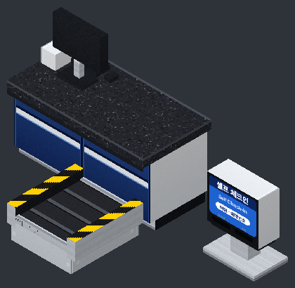
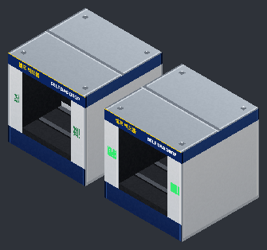
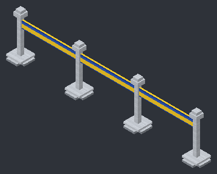
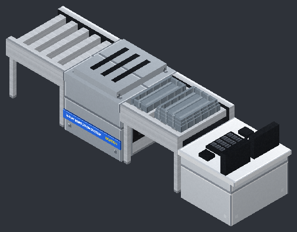
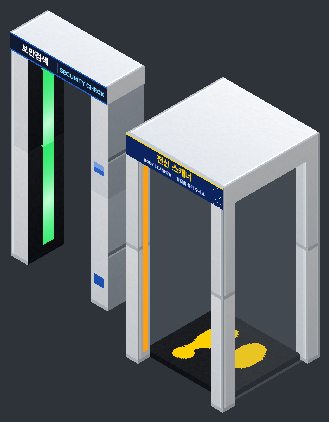
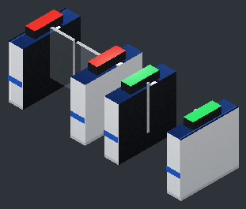
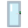
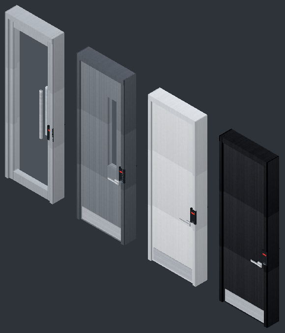
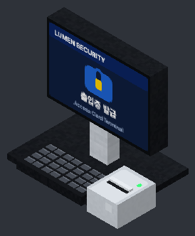
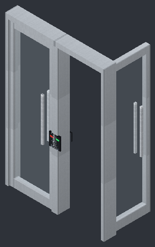

Lumen 사용 설명서
도시를 밝히는 빛 애드온. 전광판과 조명부터 공항 세트, 출입증으로 여는 보안문까지 — 처음 써도 바로 따라 할 수 있게 정리했어요.
1시작하기
설치하고, 블록을 꺼내고, 세 가지 조작만 알면 거의 모든 걸 쓸 수 있어요.
설치하기
- 파일 열기
Lumen_v1.30.0.mcaddon파일을 아이패드·아이폰의 파일 앱에서 탭하세요. 마인크래프트가 열리면서 자동으로 가져와요. - 월드에 켜기월드 옆 연필(편집) → 리소스 팩과 행동 팩에서 각각 Lumen을 켜세요. 둘 다 켜야 해요.
- 끝!월드에 들어가면 크리에이티브 인벤토리의 건축 탭에 Lumen 블록이 묶음으로 생겨요.
블록 찾기
크리에이티브 인벤토리 → 건축 탭에서 아래 묶음을 찾으세요. 인벤토리 검색창에 이름(예: “보안문”)을 쳐도 나와요.
| 묶음 이름 | 들어 있는 것 |
|---|---|
| 화면 · 전광판 · TV | LED 전광판, 스마트 TV, 시계, 하늘 패널, 응원 전광판 |
| 조명 · 라인조명 · 라이트 패널 | 라이트 패널 12색, 라인조명 3색 |
| 항공 장애표시등 | 장애표시등 8종 × 크기 3가지 |
| 미디어 파사드 | 막대형, 점형 |
| 인테리어 · 거울 | 거울 패널 |
| 보안문 · 출입증 | 출입증 발급 컴퓨터, 보안문 4종 |
| 공항 · Airport | 안내 보드, 탑승구 전광판, 세계 시계, 표지판, 간판, 유리, 자동문, 체크인·보안검색 세트, 픽토그램 |
| 간판 글자 (색 이름) | 글자 72개 — 색마다 묶음 하나씩(16색) |
기본 조작 3가지
빈손으로 블록을 누르기(PC는 오른쪽 클릭). 화면 켜기·끄기, 문 열기에 써요.
웅크린(쉬프트) 채로 누르기. TV 채널 넘기기, 출발↔도착 바꾸기, 보안문 설정에 써요.
화면 블록은 판을 빈칸 없는 직사각형으로 붙이면 큰 화면 하나가 돼요.
2화면 블록
판을 직사각형으로 붙이면 켜지는 화면들이에요. 빈손으로 터치하면 켜고 끌 수 있어요.
LED 전광판
- 놓기 — LED 전광판 판을 벽에 빈칸 없는 직사각형으로 붙이면 광고가 나와요.
- 광고 — 7초마다 다음 광고로 넘어가요. 가로로 긴 판은 이미지 광고 사이에 영상 광고가 끼고, 세로로 긴 판은 세로 광고가 나와요.
- 여러 판 — 전광판을 여러 개 세워도 판마다 다른 광고가 나와요.
- 끄기 — 빈손으로 아무 칸이나 터치하면 꺼지고(완전 검정), 다시 터치하면 켜져요.
스마트 TV
16:9 화면에 검은 테두리가 있는 TV예요. 판을 직사각형으로 붙이면 켜져요.
| 조작 | 하는 일 |
|---|---|
| 👆 터치 | 켜기 / 끄기 |
| 🧎 웅크리고 터치 | 다음 채널: 홈 → 풍경 → 광고 → 만화 → 시계 |
시계 · 하늘 패널 · 응원 전광판
한국 시간을 크게 보여 줘요. 분이 바뀔 때마다 바뀌어요.
천장에 붙이면 픽셀 구름이 흘러가요. 게임 속 시간에 따라 낮 → 노을 → 밤(별)로 바뀌어요.
환영 문구 영상이 흘러나오는 가로로 긴 전광판이에요.
3조명과 꾸미기
건물 외벽과 실내를 꾸미는 빛 블록이에요. 새 그래픽(Vibrant Visuals)에서는 색 있는 빛과 빛 번짐이 보여요.
라이트 패널 · 라인조명
- 라이트 패널 (12색) — 누른 면(벽·천장·바닥)에 얇게 붙어 한 색으로 환하게 빛나요.
- 라인조명 (주광색·주백색·전구색) — 같은 면에 이어 놓으면 저절로 이어져 직선·ㄱ자·T자·십자가 돼요. 하나만 놓으면 바라본 방향으로 곧게 놓여요.
항공 장애표시등
높은 건물 옥상·외벽에 다는 경고등이에요. 상시 등은 활주로·유도로 바닥에 줄지어 놓아도 좋아요. 벽·바닥·천장 어디에나 붙어요.
| 종류 | 불빛 |
|---|---|
| 빨강 · 상시 / 초록 · 상시 / 파랑 · 상시 / 흰색 · 상시 / 노랑 · 상시 | 계속 켜져 있음 |
| 빨강 · 깜박 | 2초마다 깜박 |
| 흰색 · 섬광 | 짧고 강하게 번쩍 |
| 노랑 · 깜박 | 1초마다 깜박 |
크기는 소형·중형·대형 3가지예요. 같은 종류의 깜박이 등은 모두 같은 순간에 켜지고 꺼져요.
미디어 파사드
- 건물 외벽 전체를 덮는 투명 LED 막이에요. 안에서는 밖이 보여요.
- 막대형(가로 LED 줄)과 점형(작은 LED 점) 두 가지.
- 11가지 장면(오로라, 물빛, 벚꽃, 한밤의 별 등)이 77초 동안 이어지는 쇼가 계속 반복돼요.
- 채우기·복사 도구로 한꺼번에 깔아도 무늬가 저절로 맞춰져요.
간판 글자
- A–Z, 0–9, 기호(& ! ? ₩ ♥ ★ → 등)까지 글자 72개 × 16색.
- 누른 벽에 붙어요. 벽을 보고 한 칸씩 놓으면 간판이 돼요.
- 앞면은 은은한 아크릴, 옆면은 어두운 금속이라 실제 채널 간판처럼 보여요.
거울
- 새 그래픽(Vibrant Visuals)에서 주변이 비쳐 보여요.
- 빈손으로 터치하면 “거울 보기” — 카메라가 거울 앞에서 나를 바라봐요(내 스킨 그대로).
- 다시 터치하거나, 10초가 지나거나, 거울에서 멀어지면 원래 시점으로 돌아와요.
4공항 세트
인천공항 제2여객터미널을 보고 만든 공항 블록이에요. 공항 이름은 세명국제공항(SMY). 운항 정보는 실제 하루치 시간표를 한국 시간에 맞춰 매일 반복해요.
출발·도착 안내 보드
- 판을 직사각형으로 붙이면 켜져요. 12편이 시간 순서로 보여요.
- 현황(탑승준비 · 탑승중 · 마감임박 · 탑승마감 · 출발 · 지연)은 한국 시간에 따라 저절로 바뀌어요.
- 목적지는 5초마다 한국어 → 영어 → 일본어 → 중국어로 바뀌어요. 위쪽 시계는 실제 시각이에요.
- 🧎 웅크리고 터치 출발 ↔ 도착 전환 · 👆 터치 켜기/끄기
탑승구 전광판 NEW
탑승구 위에 다는 모니터예요. 판을 직사각형으로 붙이면 켜져요(가로로 긴 판이 잘 어울려요, 예: 5×2).
- 곧 출발하는 6편을 8초마다 돌아가며 보여 줘요. 여러 개를 나란히 달아도 판마다 다른 편이 나와요.
- 아래 막대 색으로 현황을 알려 줘요: 지연(주황) · 출발(회색).
- 지연된 편은 원래 시각에 줄이 그어지고 새 시각이 노란색으로 나와요.
세계 시계도 같은 방식이에요: 서울·시드니·싱가포르·두바이·파리·런던·뉴욕·LA의 현재 시각(서머타임 자동 반영).
안내 표지판 · 외부 간판 · 픽토그램
- 안내 표지판(실내) 37가지 — 출국·입국장·탑승구·체크인·환승·출국심사·세관·화장실·엘리베이터·환전·라운지·구역 A~H·보안검색 등. 건축 탭의 “공항 안내 표지판” 묶음에 있어요.
- 외부 간판 28가지 — 항공사 로고 10곳, 제1·제2여객터미널, 세명국제공항, 출입구 1~8, 택시·버스·주차장·공항철도 등. “공항 외부 간판” 묶음에 있어요.
- 표지마다 아이템이 따로 있어요(아이콘에 표지 그림이 보여요). 원하는 표지를 골라 붙이면 바로 그 표지가 나와요. 넘길 필요가 없어요.
- 같은 표지 블록끼리 붙이면 큰 표지판 하나가 돼요. 다른 표지를 바로 옆에 붙이면 따로따로 된 표지판이에요.
- 켜져 있으면 판 전체가 밝게 빛나요(작은 표지판은 모든 칸이 가장 밝은 빛). 👆 터치하면 켜기/끄기.
- 예전 버전에서 붙여 둔 “넘기는” 표지판은 그대로 동작해요(목록에서만 빠졌어요).
- 판이 가로로 2.5배 넘게 길면 가로형, 아니면 정사각형 그림이 나와요.
- 픽토그램 42가지 × 3색(파랑·흰색·노랑) + 비상구 2가지 — 글자처럼 누른 벽에 한 칸씩 붙어요.
유리 · 자동문
- 커튼월 유리창(실버·화이트·블랙 프레임)은 이어 붙이면 프레임이 하나로 이어져요. 통유리는 프레임이 없어요.
- 유리 자동문(투명)·입국장 자동문(반투명)은 한 번 놓으면 3칸 높이 한 묶음으로 서요. 위가 한 칸만 비어 있으면 2칸으로 서요.
- 사람이 다가가면 세 칸이 함께 열리고, 멀어지면 함께 닫혀요. 여러 짝을 한 줄로 놓으면 가운데서 양쪽으로 갈라져요.
- 한 칸을 부수면 묶음 전체가 사라져요. 예전에 한 칸씩 쌓아 둔 자동문은 저절로 3칸 묶음으로 합쳐져요.
- 센서가 따로 필요 없어요(예전의 “자동문 상부 레일”은 목록에서 뺐어요. 이미 달아 둔 레일은 그대로 남아요).
체크인 카운터


| 블록 | 쓰는 법 |
|---|---|
| 체크인 카운터 | 나란히 이어 놓으면 긴 카운터가 돼요. 앞면(파란 판)이 놓는 사람 쪽을 봐요. |
| 체크인 PC | 카운터 위에 올려요. 화면은 직원 쪽(카운터 뒤)을 봐요. |
| 수하물 저울 컨베이어 | 벨트가 흘러요. 올라서면 무게가 나오고, 23kg을 넘으면 초과 안내가 떠요. |
| 셀프 체크인 키오스크 | 화면이 놓는 사람 쪽을 봐요. |
| 항공사 체크인 화면 (10곳) | 카운터 위에 올려요. 그 항공사 실제 편을 5초마다 넘기고, 아래 막대에 체크인 현황이 나와요: 시작 전(출발 3시간 전까지) · 체크인 중 · 마감 임박(출발 60분 전) · 마감(출발 40분 전). |
| 셀프 백드롭 | 앞이나 뒤로 다가가면 셔터가 위로 열려요. |
| 줄 서기 차단봉 | 바로 옆에 이어 놓으면 끈이 저절로 연결돼요(직선·ㄱ자·T자). 채우기 도구로 깔아도 연결돼요. |

보안검색대


| 블록 | 쓰는 법 |
|---|---|
| 문형 금속탐지기 | 아래칸만 놓으면 위칸이 자동으로 서요(2칸). 지나가면 초록(통과)이나 빨강(경보) 불과 소리가 나요. |
| 전신 스캐너 | 2칸 자동 설치. 안에 들어가 2초 동안 가만히 서 있으면 스캔 → 결과가 나와요. 대기는 파랑, 스캔 중은 호박색. |
| X-ray 수하물 검색기 | 터널 안 벨트가 흐르고 납 커튼이 달려 있어요. 롤러 테이블과 이어 놓으세요. |
| X-ray 모니터 데스크 | 가방 X-ray 그림이 4초마다 바뀌어요. |
| 롤러 테이블 · 트레이 롤러 테이블 | 컨베이어 양쪽에 이어 놓아요. 트레이가 쌓인 것도 있어요. |
| 출국장 자동 게이트 | 게이트 앞뒤로 다가가면 플랩이 열리고 표시등이 빨강 → 초록. 옆 레인 게이트는 같이 열리지 않아요. |

5보안문과 출입증
공항·회사·아파트 어디에나 쓰는 출입 통제 시스템이에요. 그 기관이 발급한 출입증으로만 열려요.
한눈에 보기
문과 출입증의 주인이에요. 예: “세명국제공항”, “101동 관리실”. 발급 컴퓨터에서 만들어요.
기관 관리자의 열쇠. 문을 등록하고, 모든 문을 열고, 문 설정을 바꿔요.
직원·주민에게 주는 카드. 이름이 “기관명 / 사용자 이름”으로 찍혀요.
발급 컴퓨터를 쓸 때마다 넣는 숫자 4~8자리. 처음 설정할 때 정해요.

보안문 · 유리
5분 만에 설정하기
- 발급 컴퓨터 놓고 터치“보안문 · 출입증” 묶음의 출입증 발급 컴퓨터를 놓고 터치 → 새 기관 만들기.
- 기관 정보 적기기관 이름, 관리자 이름, 관리자 인증번호(숫자 4~8자리)를 적으면 마스터키가 인벤토리에 들어와요.
- 보안문 설치보안문을 문 자리에 놓으세요. 아래칸만 놓으면 3칸이 자동으로 서요. 바깥(카드 리더가 있는 쪽)에 서서 놓으면 그쪽이 바깥이 돼요.
- 문 등록마스터키를 손에 들고 문을 터치 → “보안문을 «기관명»에 등록했어요”.
- 출입증 발급컴퓨터 터치 → 인증번호 → 출입증 발급 · 재발급 → 사용자 이름. 카드를 그 사람에게 건네주세요.

발급 컴퓨터 쓰기
컴퓨터를 터치하면 먼저 관리자 인증번호를 물어요. 맞게 넣으면 메뉴가 열려요.
- 출입증 발급 · 재발급 — 사용자 이름을 적으면 카드가 바로 내 인벤토리에 들어와요. 이미 있는 이름이면 “재발급할까요?”라고 물어요.
- 출입증 정지 — 목록에서 고르면 그 카드는 바로 못 써요.
- 마스터키 재발급 — 새 마스터키를 받고, 이전 마스터키는 무효가 돼요.
- 관리자 인증번호 바꾸기
컴퓨터를 여러 대 쓰고 싶어요
새 컴퓨터를 놓고, 그 기관 마스터키를 손에 든 채 터치 → 기존 기관에 연결 → 인증번호. 이제 두 컴퓨터가 같은 기관을 관리해요.
문 열기 · 닫기
- 카드를 꼭 손에 들지 않아도 돼요. 출입증이 인벤토리 어디에 있든, 빈손으로 문을 터치하면 열려요.
- 문 세 칸 어디를 터치해도 돼요(아래·가운데·위, 카드 리더 포함).
- 열린 문은 4초 뒤 저절로 닫혀요. 문 칸에 사람이 서 있으면 지나갈 때까지 기다려요.
- 안쪽에서는 카드 없이 터치만 하면 열려요(갇히지 않게). 안쪽 문틀에는 초록 나가기 버튼이 있어요.
분실 · 퇴사 · 재발급
| 상황 | 이렇게 하세요 | 결과 |
|---|---|---|
| 출입증을 잃어버렸어요 | 컴퓨터 → 출입증 발급 · 재발급 → 같은 이름 | 새 카드 지급, 잃어버린 카드는 바로 무효 |
| 퇴사·이사했어요 | 컴퓨터 → 출입증 정지 → 이름 고르기 | 그 카드로는 더 이상 안 열림 |
| 마스터키를 잃어버렸어요 | 컴퓨터 → 마스터키 재발급 | 새 마스터키 지급, 옛 키는 무효 |
문 설정 · 양문
마스터키를 가진 채(손이든 인벤토리든) 🧎 웅크리고 터치하면 보안문 설정이 열려요.
- 양쪽 모두 카드 필요 — 안쪽에서도 카드가 있어야 열려요. 보안 구역에 써요. (안에 갇히지 않게 조심!)
- 등록 해제 — 다시 마스터키로 등록할 때까지 아무도 못 열어요.

양문 만들기
같은 방향으로 보안문 두 개를 바로 옆에 놓으면 저절로 양문(경첩이 양 끝, 가운데 카드 리더 하나)이 돼요. 두 짝을 같은 기관에 등록하면 카드 한 번에 두 짝이 같이 열려요.
인증번호를 잊었어요
- 마스터키 챙기기그 기관 마스터키를 인벤토리에 넣어 두세요.
- 웅크리고 컴퓨터 터치인증번호를 묻지 않고 “인증번호 다시 정하기” 화면이 열려요.
- 새 번호 두 번 입력끝! 새 번호로 컴퓨터를 쓰세요.
서버 관리자 비상 복구 OP 전용
기관이 마스터키와 인증번호를 모두 잃었을 때만 써요. 치트가 켜진 월드에서 관리자(OP)가 채팅창에 입력해요.
- 기관 고르기만들어진 기관 목록이 나와요.
- 할 일 고르기“새 마스터키 받기(이전 키 무효)” 또는 “관리자 인증번호 다시 정하기”.
- 기록이 남아요그 기관 컴퓨터 메뉴에 “최근 서버 관리자 복구 · 시각 · 이름 · 한 일”이 계속 보여요. 서버 로그에도 남아요.
안전하게 쓰는 법
- 마스터키는 관리자만. 마스터키는 모든 문을 열고 문 설정을 바꿀 수 있어요.
- 인증번호는 혼자서 입력하세요. 게임 입력창은 숫자가 그대로 보여요(가림 기능 없음).
- 사람이 바뀌면 바로 정지·재발급. 옛 카드는 그 즉시 무효가 돼요.
- 크리에이티브 모드 플레이어는 문을 부술 수 있어요. 게임 규칙상 막을 수 없어요. 방문자는 어드벤처 모드로 두거나 영역 보호 기능과 같이 쓰세요. 부순 뒤 다시 놓은 문은 등록이 안 된 새 문이라 예전 카드로 열리지 않아요.
- 서바이벌에서는 튼튼해요. 보안문은 폭발에 버티고 캐는 데 오래 걸려요.
6사용 팁
더 예쁘게, 더 부드럽게 쓰는 방법이에요.
렉 없이 쓰는 그래픽 설정
빛 블록이 많은 도시에서 버벅이면 대부분 새 그래픽(Vibrant Visuals) 부담 때문이에요(Lumen을 빼도 같은 곳에서 버벅였어요). 아래처럼 맞추면 예쁜 빛은 살리고 부담은 줄어요.
| 설정 | 추천 |
|---|---|
| 해상도 | 75% + 업스케일링(TAAU) |
| 반사 | 낮음 |
| 그림자 | 중간 (계속 버벅이면 낮음) |
| 안개 · 구름 | 안개 끄기 · 구름 낮음 |
| 점광원 그림자 | 낮음 |
| 빛 퍼짐(블룸) 강도 | 그대로 두세요 — 빛이 예쁜 이유예요 |
짓기 팁
- 앞면이 있는 블록은 손님 자리에서 놓으세요. 카운터·키오스크·모니터는 놓는 사람을 향해요.
- 지나가는 블록은 지나갈 방향을 보고 놓으세요. 탐지기·게이트·보안문은 바라본 방향으로 지나가게 놓여요.
- 체크인 줄: 카운터를 길게 잇고 → 위에 항공사 화면과 PC → 앞에 저울 컨베이어 → 손님 쪽에 차단봉 줄.
- 보안검색 줄: 롤러 테이블 → X-ray 검색기 → 트레이 롤러 테이블, 옆에 금속탐지기, 뒤에 모니터 데스크.
- 탑승구: 탑승구 전광판을 문 위 벽에 5×2 정도로 달면 잘 보여요.
- 큰 화면은 가로가 유리해요. 전광판은 가로로 긴 판에서 영상 광고까지 나와요.
7문제 해결
게임 화면 아래(액션바)에 뜨는 문구를 보면 대부분 바로 알 수 있어요.
화면 아래 안내 문구 뜻
| 문구 | 뜻 · 해결 |
|---|---|
| 빈칸 없는 직사각형이 되면 켜져요 (7/8칸) | 판이 직사각형이 아니에요. 빈 칸을 채우세요. |
| …이 너무 커요 (한 변 최대 64칸) | 한 변을 64칸 이하로 줄이세요. |
| 보안문은 3칸 높이가 필요해요 | 문 자리 위 두 칸을 비우고 다시 놓으세요. |
| 위 칸이 막혀 있어서 윗부분을 놓지 못했어요 | 금속탐지기·전신 스캐너 위 칸을 비우세요. |
| 등록 안 된 보안문이에요 | 마스터키를 손에 들고 문을 터치해 등록하세요. |
| 출입 거부 · «기관» 출입증이 필요해요 | 이 문 기관의 출입증이 없어요. |
| 출입 거부 · 정지되었거나 재발급되어 무효가 된 카드예요 | 옛 카드예요. 관리자에게 재발급을 받으세요. |
| 이 마스터키는 쓸 수 없어요 | 재발급되어 무효가 된 마스터키예요. |
| 인증번호가 틀렸어요 (2/5) | 5번 틀리면 1분 잠겨요. |
| 다른 기관에 등록된 문이에요 | 그 문을 등록한 기관의 마스터키로만 바꿀 수 있어요. |